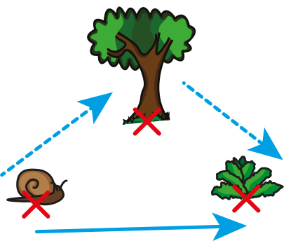

|
Chapitre 6
|
- Triangles - Inégalité triangulaire et construction
|
Activité Introduction
On prend un spaghetti (ou une bande fine de papier)
- On casse en trois morceaux le spaghetti. Peut-on former un triangle avec les trois morceaux obtenus ?
- Comment casser un spaghetti en trois tel que :
- Il ne soit pas constructible ?
- Il soit constructible ?
- Quel lien peut-on faire entre la taille des morceaux et la constructibilité du triangle ?
Propriétés du triangle :
Constructibilité du triangle :
Propriété :
Pour pouvoir construire un triangle à partir de trois longueur données il faut vérifier que la longueur du coté le plus long est inférieur ou égal à la somme des longueurs des deux autres cotés
Exemples :
Le triplet 11 cm ; 5cm et 9cm permet de construire un triangle car 5 + 9 = 14 et 14 > 11.
Le triplet 17cm ; 3cm et 10 cm ne permet pas de construire un triangle car 3 + 10 = 13 et 13 < 17.
Inégalité triangulaire :
Propriété :
Dans un triangle la longueur d'un côté est toujours inférieur à la somme des longueurs des deux autres côté.
La ligne droite est toujours le plus court.
Le chemin en trait plein est plus court que celui en pointillé.

Exemple :
Dans le triangle ci-contre :
- $\textcolor{#039be5}{a} \leq \textcolor{#e53935}{b} + \textcolor{#dedc00}{c}$
- $\textcolor{#e53935}{b} \leq \textcolor{#039be5}{a} + \textcolor{#dedc00}{c}$
- $\textcolor{#dedc00}{c} \leq \textcolor{#039be5}{a} + \textcolor{#e53935}{b}$

Construction de triangle :
Avec trois longueurs :
Construire un triangle ABC tel que AB = 8cm, AC = 6cm et BC = 4cm.
Avec deux longueurs et un angle :
Construire un triangle ABC tel que AB = 8cm, AC = 5cm et $\widehat{BAC} = 30°$.
Construire un triangle ABC tel que AB = 8cm, BC = 6cm et $\widehat{BAC} = 30°$.
Avec une longueur et deux angles :
Construire un triangle ABC tel que AB = 8cm, $\widehat{BAC} = 30°$ et $\widehat{ABC} = 75°$.